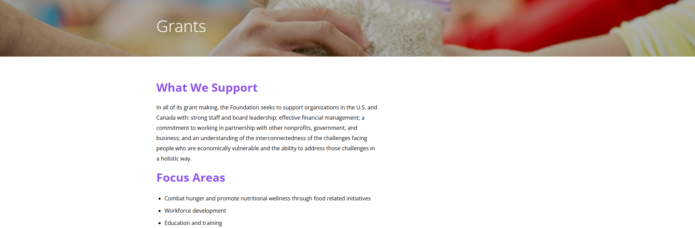
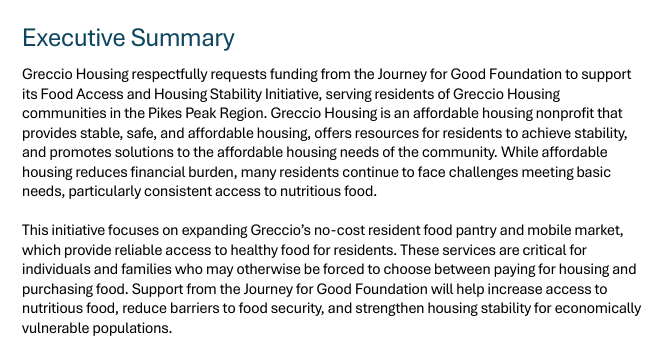
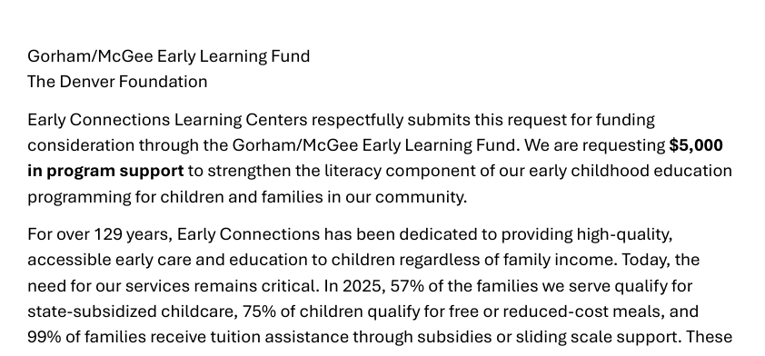

Grant Writing & Technical Documentation
Nonprofit Grant Proposals
Authored three targeted grant proposals for two nonprofits — a wildlife conservation group and a youth literacy program — securing funding through clear narrative structure, evidence-based impact statements, and funder-aligned language.
Responsibilities
Funder Research
Conducted funder research and alignment analysis to tailor each proposal to specific grant priorities and submission requirements.
Program Interviews
Interviewed program staff to surface impact data, community needs, program details, and measurable outcomes.
Narrative Drafting
Drafted need statements, program descriptions, organizational credibility sections, evaluation plans, and sustainability narratives.
Budget Narratives
Developed budgets and budget narratives that clearly connected requested funds to program activities and expected outcomes.
Revision Cycles
Revised proposals through multiple feedback cycles with program staff and executive leadership.
Submission Formatting
Formatted final documents to each funder’s submission guidelines, including section headers, page counts, and required attachments.

Overview
Turning nonprofit program work into funder-ready narratives
This project encompassed three distinct grant proposals submitted on behalf of two nonprofits: Raptor Watch Colorado, a wildlife conservation organization, and Literacy Bridges, a youth reading intervention program.
Each proposal required translating program work into funder-facing narratives that aligned with specific grant priorities, demonstrated measurable impact, and complied with submission requirements.
Service Value
Helping nonprofits communicate impact in funder language
The value of the grant writing work came from translating strong programs into clear, evidence-based proposals. Each proposal connected community need, program design, evaluation methods, and budget rationale into a funder-aligned narrative.
Targeted grant proposals authored for nonprofit funding opportunities.
Nonprofit organizations supported through tailored grant narrative development.
Community foundation proposal funded in the first cycle.

Problem & Goals
Bridging the gap between program knowledge and funder expectations
Both organizations had compelling programs but struggled to communicate their impact in language that resonated with institutional funders.
The primary challenge was bridging the gap between program-level knowledge held by staff and the evidence-based, outcome-focused framing funders require.
Clear Need Statements
Each proposal needed a focused problem statement that clearly defined the community or ecological need being addressed.
Measurable Impact
Program outcomes needed to be framed with documented data instead of relying only on anecdotal evidence.
Funder Alignment
Each narrative needed to match the funder’s priorities, language, format, and review expectations.
User Scenario
Identify Funding Opportunity
The nonprofit identifies a grant opportunity that aligns with its program goals and community impact.
Gather Program Details
Program staff provide background information, prior outcomes, budget needs, and implementation details.
Translate Impact
The proposal turns internal program knowledge into a clear need statement, program design, and outcome-focused narrative.
Review for Compliance
The draft is checked against funder requirements, page limits, budget formats, and required attachments.
Submit Proposal
The final document is formatted, proofread, and submitted according to the funder’s specifications.

My Role
Leading proposal writing, revision, and submission formatting
I served as lead writer across all three proposals. For Raptor Watch Colorado, I wrote one federal-style proposal to a wildlife foundation and one community foundation proposal emphasizing local partnership.
For Literacy Bridges, I wrote a corporate foundation proposal focused on literacy outcomes and ROI framing. I managed drafts, incorporated feedback, and formatted final submissions to each funder’s specifications.
Program Director
Subject matter expert
This stakeholder understands the program deeply but needs support translating daily work into funder-facing impact language.
Goals
- Explain the program clearly
- Show documented impact
- Meet funder requirements
Grant Reviewer
Institutional funder audience
This reader needs a clear, compliant proposal that demonstrates need, feasibility, measurable outcomes, and responsible use of funds.
Goals
- Understand the need quickly
- Evaluate program credibility
- Confirm alignment with funding priorities
Discovery & Constraints
Working within strict formats, evidence standards, and deadlines
Discovery involved intake interviews with program directors and a review of prior grant applications, annual reports, and program data.
Key constraints included strict word limits, varying budget format requirements, and tight submission deadlines. Program claims also needed to be grounded in documented data to meet funder due-diligence standards.
Word Limits
One proposal capped narrative sections at 1,000 words each, requiring concise and strategic writing.
Budget Formats
Each funder required different budget structures, supporting explanations, and financial attachments.
Evidence Standards
Impact claims needed to be supported by documented data rather than anecdotal program success stories alone.
Key Features
Funder-Aligned Narrative Structure
Each proposal was tailored to the funder’s priorities, using language and sequencing that made the program’s value easier to evaluate.
Evidence-Based Impact Statements
Need statements, program descriptions, and evaluation plans were grounded in documented program data to strengthen credibility.
Compliance and Submission Checklists
Compliance checklists tracked required headers, page limits, financial documents, signed assurances, IRS determination letters, and final formatting requirements.

Information Architecture
Structuring proposals around a standard grant narrative arc
Each proposal was structured around the standard grant narrative arc: organizational credibility, community need, program design, evaluation methodology, sustainability plan, and budget narrative.
Within that arc, sequencing and emphasis were tailored to each funder’s priorities, such as leading with ecological data for the wildlife funder and front-loading student outcome statistics for the corporate education funder.
Proposal Architecture
The structure helped reviewers quickly understand what problem the program addressed, how it worked, how success would be measured, and why the organization was credible.
Requirements & Acceptance Criteria
Tracking funder-specific requirements before submission
Requirements varied by funder. Federal-style guidelines required specific section headers and page counts, while foundation portals included character-limited text fields. All three proposals required signed assurances, organizational financials, and IRS determination letters.
Project Link
Grant proposal document
The linked document provides an example of the grant writing and technical documentation work, including structured narrative development, funder-facing language, and formatted proposal content.
Analytics, Iteration, Outcomes & Next Steps
Submitting clear, compliant proposals through structured revision
Each proposal underwent two to three revision cycles. First-draft reviews focused on clarity and narrative logic; second-round reviews incorporated program staff corrections; final reviews addressed funder-specific language, compliance items, and proofreading.
All three proposals were submitted on time and to specification. The Raptor Watch Colorado community foundation proposal was funded in the first cycle, and Literacy Bridges received a request for additional information from the corporate funder.
Debrief with organizations on reviewer feedback and follow-up opportunities.
Build a reusable grant narrative library to streamline future submissions.
Continue refining impact language, evaluation plans, and budget narratives for future funding cycles.
Next Steps
Next steps include debriefing with both organizations on reviewer feedback and building a reusable grant narrative library to streamline future submissions.
Future work would include strengthening evaluation language, maintaining updated impact data, and creating reusable proposal sections for recurring funding opportunities.
Learnings
This project strengthened my ability to translate program knowledge into clear, evidence-based narratives for institutional funders.
I also learned how important compliance tracking, budget narrative clarity, and funder-specific framing are in successful grant proposal development.